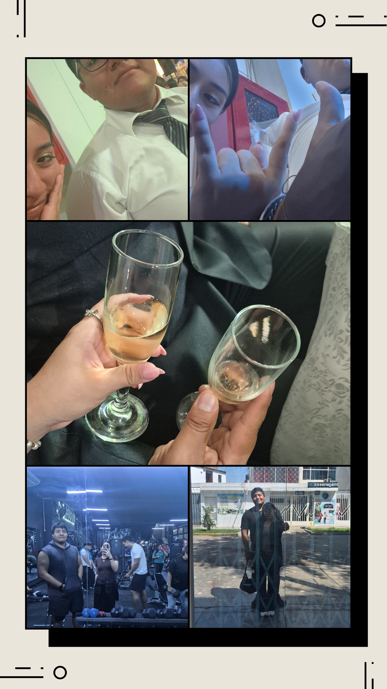

SÚBELE AL VOLUMEN
Esta vez sin cabos sueltos. No sé si aún abra el QR cuando haya hecho esta modificación en el código, esperemos que sí. No hago esto porque me estresaba mucho (hablo de programar), pero recuerdo que me dijiste que nunca recibiste un regalo original y pues hice esto para ti, por tu cumple. Creo que volveré a hacer esto de programar
No sé cuándo veas esto, si aun lo guardes con aprecio o si en realidad llego a gustarte esto, no tengo recentimiento alguno ni arrepentimientos, pero dejaré la página activa hasta fin de año creo; puede y me olvide, pero bueno ahí estará, trabajare en ella para practicar y supongo soltar un poco, tal vez solo estoy escribiendo esto para mi pero eso es algo que no sabre.
Bueno, lo único que quería decirte es, digamos, mi último consejo: VIVE UNA VIDA QUE QUIERAS RECORDAR Y NO DEJES QUE TE IMPONGAN LA VIDA QUE NO PUDIERON VIVIR O REALIZAR, por errores, problemas o situaciones que no supieron manejar. Al final somos lo que elegimos ser y nuestras decisiones y acciones hablarán por nosotros. Tómalo como gustes.
Perdón por la huida, pero sabía que si dejaba alguna apertura, caería otra vez, con la ilución de tal vez intentarlo, te lo dije, tiendo a alejarme cuanto estoy mal, pero seamos sinceros, todo esta en nuestra contra, tal vez solo tuvimos fe inicialmente pero al final supimos que no se podria dar, ya que al menos por mi mente aun que por mas que me lo cuestione y te diga que no me importara el que diran.
Pues si me importa pero no por el que dirian de mi, me importa mas el hubieran dicho y hablado de ti tu familia, si se hubieran enterado de que estuvieramos juntos, tal vez yo por mi parte lo habria sabido manejar pero me procupaba mas tu reaccion y mas por el hecho de que tiendes a encerrarte en tu propia burbuja cuando algo no esta bajo tu control o te abruma mucho.
Bueno supongo que al final nuestra moral y conciencia nos detendria tarde o temprano, nos habria seguido rondando y cuestionando sobre nosotros, eres grandiosa, siempre apostare por ti, solo debes creerlo tu tambien, el mundo siempre nos pondra obstaculos y todo el mundo hablara de ti, lo importante no es el problema, si no en como reaccionas ante ello, eres mas fuerte de lo que crees tanto física y mentalmente.
Solo te ayudé a llevar las cosas un rato, ahora toca volver al 1 vs 1. Y siempre hay que levantarse por muy mala que sea la situación, por mas pesada que encntremos la vida, el dia, la semana o el mes.
Tus locuras siempre irán con las mías, hoy volví a ver en una película mientras trabajaba y me recordo cuando hice esta pagina .
Si esta canción suena este 29 en el Estadio Nacional, ten por seguro que me recordará a ti. Igual que cuando escucho "Nublado", "Plan A", "Ella", "Demasiado loco" o "Party en el barrio", Te Amo... jsjsj.
Si la vida nos vuelve a reunir más adelante, espero que sea cuando ambos seamos más maduros y tengamos una mente más libre. Sinceramente me siento mal porque siento que te dejo a tu suerte, pero sé que esta vez tienes a más gente fuera de tu familia que te quiere y te apoya.
En fin, te condeno a que cada vez que escuches al Duko o veas a Spider-Man te acuerdes de mí. Porque ten por seguro que cada vez que escuche Oasis, me salga un reel de Drácula, suene Avicii en mis audífonos, vea a Paulo Londra o pase por Jesús de Nazareth... tú vas a venir a mi mente.
Bueno, eso es todo; solo estuve de paso como te dije cuando nos conocimos y mi tiempo terminó, al final me condene yo mismo con mis propias palabras.
ESTAMOS EN LAS SOMBRAS PARA SERVIR A LA LUZ.
BYE, TE QUIERO MUCHO NAYU.
